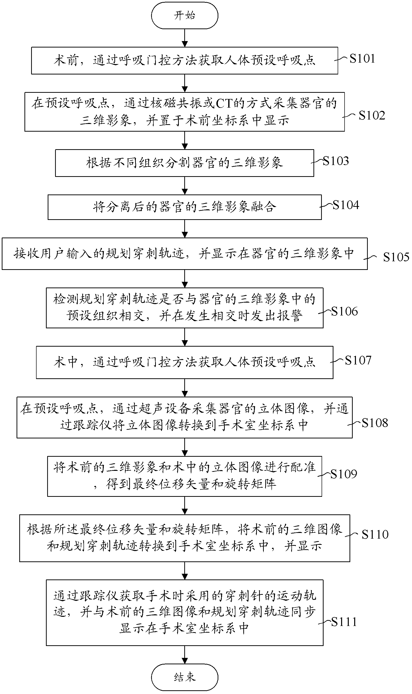

发明名称--手术导航方法和系统
| 申请号 | CN201210096129.8 | 申请日 | 2012.04.01 | ||
| 公开（公告）号 | CN103356284B | 公开（公告）日 | 2015.09.30 | ||
| IPC分类号 | A61B19/00 | 申请（专利权）人 | 中国科学院深圳先进技术研究院; | ||
| 发明人 | 陈垦;李志成;辜嘉; | 优先权号 |
摘要:
一种手术导航方法包括：术前，通过核磁共振或CT的方式采集器官的三维影像；接收用户输入的规划穿刺轨迹，并显示在器官的三维影像中；术中，通过超声设备采集器官的立体图像，并通过跟踪仪将立体图像转换到手术室坐标系中；将术前的三维影像和术中的立体图像进行配准，得到最终位移矢量和旋转矩阵；根据最终位移矢量和旋转矩阵，将术前的三维图像和规划穿刺轨迹转换到手术室坐标系中显示；通过跟踪仪获取手术时采用的穿刺针的运动轨迹，并与术前的三维图像和规划穿刺轨迹同步显示在手术室坐标系中。本发明还提供一种对应的手术导航系统。上述导航系统用术前清晰的器官图像配准替换术中模糊图像，为操作、时间以及图像清晰度等方面提供了很大帮助。
摘要附图:
